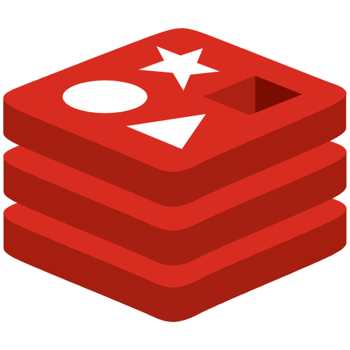
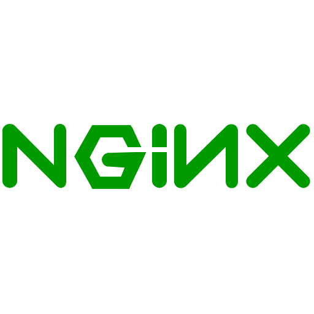

FastAPI Practice
Side Project — 3
28일 커리큘럼을 하나의 채용 서비스 API로 점진 진화시킨 운영 실습
매일 브랜치 하나씩, 이전 Day 위에 기능을 쌓아 올리는 구조(브랜치 = Day)로 진행했습니다.
강의 골격 위에 Keyset 페이지네이션 · 인증/CRUD 통합 테스트 · Redis/Celery 비동기 · RDS 커넥션 풀 튜닝 · Blue/Green 무중단 배포를
직접 구현하고, 라이브러리 호환 문제까지 잡아 테스트로 고정한 5개 브랜치를 포트폴리오 근거로 남겼습니다.
27개
Day 단위 브랜치
Part 1~4 누적 진화
Part 1~4 누적 진화
5개
직접 구현·검증한
핵심 실무 브랜치
핵심 실무 브랜치
72건
직접 추가한 테스트
전부 통과 (pytest)
전부 통과 (pytest)
5건
SQLAlchemy 2.0 호환
트러블슈팅 해결
트러블슈팅 해결
01
인덱스 최적화 · Keyset 페이지네이션
7 passed
GET /job-posts/feed — (created_at DESC, id DESC) 정렬 키를 base64url 커서로 인코딩해
다음 페이지는 그 키 뒤만 범위 스캔. limit + 1로 다음 페이지 유무를 판단해 COUNT(*)를 없앴습니다.
깊은 offset이 앞 행을 버리며 읽던 비용을 제거하고, 동일 생성시각은 id로 안정 정렬.
검증 — 복합·정렬(desc)·부분(
status='OPEN') 인덱스를 선언하고, EXPLAIN QUERY PLAN에
ix_job_posts_* 사용(풀스캔 아님)을 테스트로 고정
02
인증 · User CRUD 통합 테스트
27 passed
POST /users/me/password — 현재 비밀번호를 Argon2id로 검증하고, 변경 시 기존 Refresh Token 전체 폐기.
PATCH /users/me/email은 비밀번호 확인 → 동일 여부(400) → 중복(409) 순서로 판정해
"빈자리 없음"과 "잘못된 요청"을 상태 코드로 구분했습니다.
검증 — 204/200·400·401·403·409·422를 상태 코드별 13 케이스로 고정, 회원가입 → 로그인 → 비밀번호 변경 → 기존 쿠키 갱신 401까지 통합 확인
03
Redis 캐시 · Celery 비동기 처리
31 passed
POST /tasks/email — 발송은 큐에 넘기고 즉시 202 Accepted로 응답, 재시도·지수 백오프·지터는 워커가 담당.
CacheManager는 get_or_load(key, loader, ttl)로 캐시 미스 시 DB 로더를 호출하고,
적중률(hits/misses/hit_rate)을 계측해 GET /monitoring/cache로 노출했습니다.
검증 — TTL 경계(59초 유효 / 60초 만료), 무효화 후 재로드, Redis 장애 시 로더 결과 폴백, 깨진 JSON 폐기, 422·취소(terminate) 시나리오
04
RDS PostgreSQL · 커넥션 풀 튜닝
28 passed
build_engine() — pool_size · max_overflow · pool_timeout · pool_recycle과
pool_pre_ping(RDS 페일오버 후 끊긴 커넥션 폐기)을 인자로 주입. 엔진 생성 시점에는 접속하지 않는 lazy 특성을 이용해
서버 없이 설정 적용 여부를 테스트했습니다.
검증 —
GET /health/db가 SELECT 1 왕복 레이턴시와 풀 상태(size/checkedout/overflow)를 반환, DB 실패 시 503. liveness(/health)는 DB 장애와 무관하게 200
05
CI/CD · EC2 Blue/Green 무중단 배포
35 passed
배포를 "서버에 올렸다"가 아니라 "새 버전이 건강한지 확인하고, 실패하면 되돌린다"까지로 정의했습니다.
GET /health/ready(DB 필수 · Redis는 REQUIRE_REDIS=true일 때 필수 → 미충족 503)와
GET /health/version(APP_VERSION / GIT_SHA)으로 전환 직후 새 색이 응답 중인지 확인하고,
셸에 있던 색 판정 로직을 scripts/bluegreen.py의 순수 함수 + CLI로 옮겨 테스트 가능하게 만들었습니다.
검증 — readiness·version·blue/green 왕복 항등·배포 구성 일치(Dockerfile health, compose
service_healthy, deploy 재시도·롤백, CI pytest+postgres, CD IMAGE_TAG→deploy.sh)까지 21건
Nginx:80
→
app-blueACTIVE · /health/ready 200
app-green대기 → 전환 후 active
↺
rollback.previous_upstream
라이브러리 호환 트러블슈팅 sqlmodel 0.0.32 · SQLAlchemy 2.0.46
강의 원본 코드는 그대로는
pytest가 시작조차 못 했습니다. 기능을 바꾸지 않고 실행·검증 가능하게 만드는 최소 수정 5건.- relationship 대상 해석 —
from __future__ import annotations때문에 sqlmodel이relationship('list[Permission]')을 해석하지 못해 mapper 초기화 실패 → future import 제거, forward reference만 문자열화 - 트랜잭션 경계 — SQLAlchemy 2.0 autobegin 이후
session.begin()이 "transaction already begun" →transactional()헬퍼로 커밋/롤백 책임 이동(라우터 8곳) - fixture 이름 충돌 —
import app.models.role이 FastAPI 인스턴스app을 덮어씀 →from app.models import role - 미들웨어 · 지연 로딩 — TrustedHost가 테스트 호스트를 400으로 거부(base_url 변경),
user.roles접근 시MissingGreenlet→selectinload선로딩 - 린트 기준 정리 —
ruff check29건 실패를 자동수정 + 규칙 예외(한글 테스트명 N802 등)로 통과시켜 CI를 초록으로
기술 스택 · 이 실습에서 얻은 것
Java/Spring 이후 Python 생태계의 운영 도구를 같은 기준(측정 → 구조 → 테스트)으로 다뤄 본 경험
- 설계 판단을 테스트로 남기기 — 캐시가 없어도 동작해야 한다는 규칙, readiness와 liveness의 분리처럼 "왜"를 코드로 고정
- 로컬에 없는 인프라 검증 — RDS·Redis·워커 없이도 엔진 설정·캐시 폴백·태스크 계약을 확인하는 대역 설계
- 배포 자동화의 마지막 한 걸음 — 전환·롤백 판정을 사람 눈이 아니라 CLI와 헬스체크가 하도록
FastAPI
SQLModel
PostgreSQL
 Docker
Docker
 EC2 · RDS
EC2 · RDS
 Actions
Actions

Redis Celery
Nginx
이 레포지토리는 비공개 강의 실습 기반입니다. 저작권상 전체 소스 공개·재배포는 하지 않고,
포트폴리오에는 아키텍처·설계 판단과 직접 추가 구현한 기능·테스트 결과만 정리했습니다.